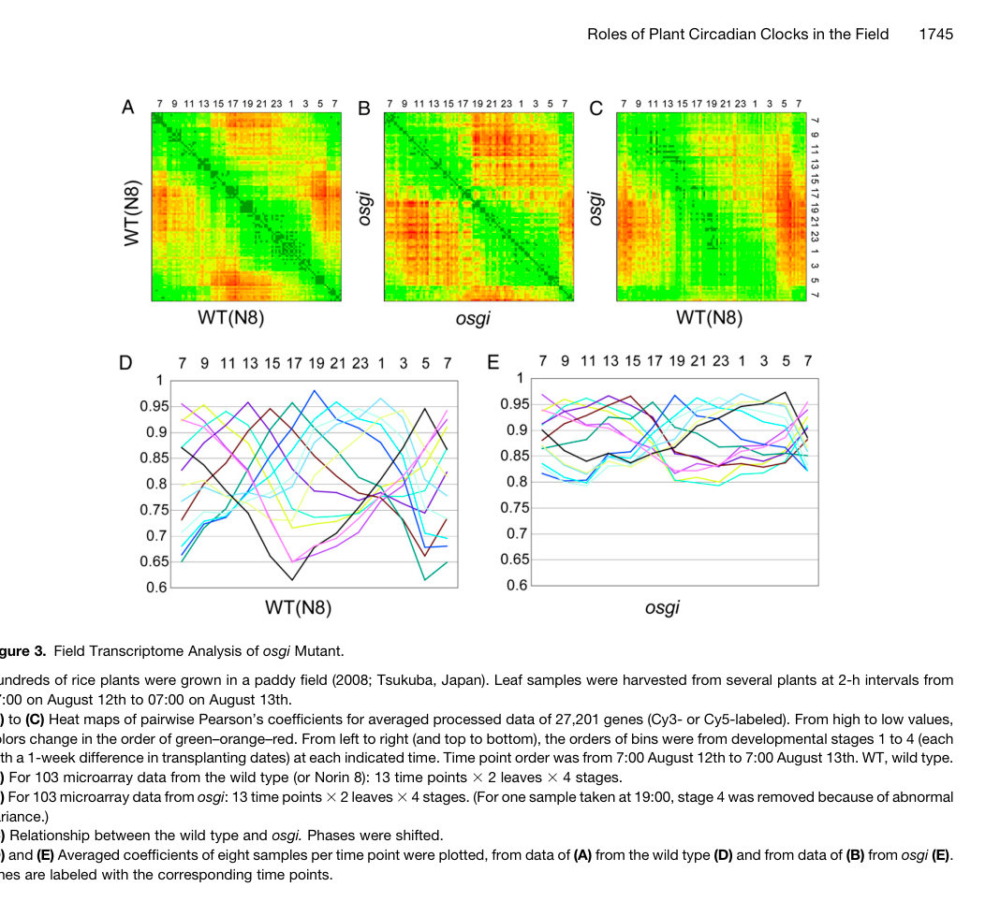

OsGI (GIGANTEA; UniProt Q9AWL7; Os01g0182600 / LOC_Os01g08700) is the rice ortholog of the plant-specific GIGANTEA-family protein, a large (1160 aa) circadian-clock-associated regulator that lacks recognized catalytic domains and instead functions through extensive protein-protein interactions in both the nucleus and cytoplasm (Li et al. 2017, file:ORYSJ/GI/GI-deep-research-falcon.md). Its primary molecular role is regulatory rather than enzymatic: OsGI couples clock and light/photoperiod signaling to developmental and physiological outputs, most prominently the timing of the floral transition (heading date). In the conserved rice photoperiod module OsGI acts upstream of Hd1 (the CONSTANS ortholog) and the florigen genes Hd3a/RFT1 (OsGI-Hd1-Hd3a/RFT1), and in a rice-specific branch OsGI binds the major long-day floral repressor Ghd7 and promotes its 26S-proteasome-dependent degradation, an activity antagonized by phytochromes OsPHYA/OsPHYB; a 2024 review summarizes OsGI as a circadian-rhythm gene and activator of Hd1 that promotes flowering under short days and inhibits flowering under long days (Song et al. 2024; Zheng et al. 2019, file:ORYSJ/GI/GI-deep-research-falcon.md). At the systems level OsGI is a large-effect coordinator of the rice diurnal transcriptome: in field transcriptomics an osgi-1 null altered expression of 57% (FDR 0.01) to 75% (FDR 0.05) of 27,201 genes tested, with strong effects on clock components (PRR1 ~10x up, LHY ~100x down at some time points), establishing OsGI as required for robust diurnal/circadian rhythms (Izawa et al. 2011, file:ORYSJ/GI/GI-deep-research-falcon.md). OsGI additionally links flowering-time regulation to phosphate homeostasis through direct interaction with the E2 ubiquitin-conjugating enzyme OsPHO2 (Li et al. 2017). The protein is consistent with UniProt's FUNCTION statement ("Involved in regulation of circadian rhythm, and in the control of the photoperiodic flowering ... Activates Hd1/CONSTANS gene"). Its UniProt SwissProt keywords (Biological rhythms; Developmental protein; Differentiation; Flowering) generated three keyword-derived (SPKW, GO_REF:0000043) GO annotations - cell differentiation, flower development, and rhythmic process - that are reviewed retrospectively below as developmental/clock over-annotations of the "expression/regulation is not the bare process" type.
| GO Term | Evidence | Action | Reason |
|---|---|---|---|
|
GO:0005634
nucleus
|
IEA
GO_REF:0000044 |
ACCEPT |
Summary: IEA annotation from the UniProt SwissProt subcellular-location vocabulary mapping (GO_REF:0000044). OsGI localizes to the nucleus, consistent with its role in nuclear transcriptional/regulatory complexes.
Reason: Correct and consistent with both UniProt (SUBCELLULAR LOCATION: Nucleus) and rice experimental evidence. OsGI has been observed in both nucleus and cytoplasm, and the OsGI-Ghd7 interaction relevant to photoperiodic flowering is detected in the nucleus and associated with nuclear speckles, supporting a nuclear site of action [file:ORYSJ/GI/GI-deep-research-falcon.md]. Nuclear localization is appropriate as a core cellular-component annotation; OsGI also has a cytoplasmic pool, so this term captures one of its two localizations.
Supporting Evidence:
file:ORYSJ/GI/GI-deep-research-falcon.md
OsGI has been observed in **both nucleus and cytoplasm** in rice, consistent with a regulatory protein that participates in nuclear transcriptional complexes as well as cytoplasmic/light-signaling related processes.
file:ORYSJ/GI/GI-deep-research-falcon.md
In the Ghd7 study, OsGI–Ghd7 interaction was detected **in the nucleus** and associated with **nuclear speckles**, supporting a nuclear site of action for the Ghd7 stability/interaction module.
|
|
GO:2000028
regulation of photoperiodism, flowering
|
IEA
GO_REF:0000002 |
ACCEPT |
Summary: IEA annotation from InterPro (IPR026211, GIGANTEA) mapping the GIGANTEA family to regulation of photoperiodic flowering. This is the single most accurate and core biological-process term for OsGI and is strongly supported by rice experimental and review literature.
Reason: This is the core function of OsGI and is well supported. OsGI is the upstream component of the conserved rice photoperiod pathway OsGI-Hd1-Hd3a/RFT1 and a rice-specific regulator of Ghd7 stability; reviews describe it as a circadian gene/activator of Hd1 that promotes flowering under short days and inhibits flowering under long days [file:ORYSJ/GI/GI-deep-research-falcon.md]. The InterPro2GO mapping gives the correct "regulation of" framing - OsGI regulates the photoperiodic flowering process rather than being a structural component of flowers - and is at an appropriate level of specificity. It directly captures the function UniProt describes ("control of the photoperiodic flowering ... Activates Hd1/CONSTANS gene"). This annotation is the correct replacement sense for the retired keyword-derived "flower development" SPKW term reviewed below.
Supporting Evidence:
file:ORYSJ/GI/GI-deep-research-falcon.md
OsGI acts upstream of Hd1 (CO ortholog)** and the florigen gene **Hd3a** (and also RFT1), i.e., **OsGI–Hd1–Hd3a/RFT1**.
file:ORYSJ/GI/GI-deep-research-falcon.md
summarizes OsGI (LOC_Os01g08700) as a **circadian rhythm gene and activator of Hd1** and states OsGI **promotes flowering under short days (SD)** but **inhibits flowering under long days (LD)**
|
|
GO:0030154
cell differentiation
|
IEA
GO_REF:0000043 |
REMOVE |
Summary: SPKW (GO_REF:0000043) annotation derived from the UniProt keywords "Differentiation"/"Developmental protein"; snapshot-only, removed in the current GOA release. OsGI is a circadian-clock/photoperiodic-flowering regulator, not a cell-fate or differentiation factor.
Reason: GOA's removal of this annotation was JUSTIFIED. "Cell differentiation" is a generic catch-all process term assigned purely from the UniProt "Differentiation"/"Developmental protein" keywords (which themselves are loosely applied to flowering-time regulators because the floral transition is a developmental event). There is no evidence that OsGI controls the differentiation of any specific cell type. Its demonstrated roles are regulatory: it is a high-level coordinator of diurnal/circadian transcript rhythms and controls the TIMING of the floral transition via the OsGI-Hd1-Hd3a/RFT1 module and Ghd7-stability control [file:ORYSJ/GI/GI-deep-research-falcon.md]. These are correctly captured by the circadian-regulation and photoperiodic-flowering terms (GO:0042752, GO:2000028) and do not entail a cell-differentiation function. The keyword-derived term adds no information and is an over-annotation; removal was correct.
Supporting Evidence:
file:ORYSJ/GI/GI-deep-research-falcon.md
**OsGI is not an enzyme/transporter; its primary function is regulatory**: it contributes to the **circadian/diurnal system** and couples clock/light signaling to **photoperiodic flowering** and other timed physiological outputs.
file:ORYSJ/GI/GI-deep-research-falcon.md
GI being a regulatory/scaffold-type protein rather than an enzyme or transporter.
|
|
GO:0009908
flower development
|
IEA
GO_REF:0000043 |
MODIFY |
Summary: SPKW (GO_REF:0000043) annotation derived from the UniProt keyword "Flowering"; snapshot-only, removed in the current GOA release. OsGI controls flowering TIME (the photoperiodic floral transition), not flower-organ development/morphogenesis, so the essence is sound but the term is mis-leveled.
Reason: GOA's removal of this annotation removed a term that was pointing at the right biology but at the wrong level/sense. OsGI does not participate in flower organ development or floral morphogenesis (it does not specify floral organ identity, build floral organs, etc.); rather, it REGULATES the decision/timing of flowering in response to photoperiod. "Flower development" (GO:0009908) is the bare developmental process and is therefore an over-broad mis-annotation of the ELF4 type (regulation of a process is not the process itself). The correct sense is "regulation of flower development" (GO:0009909) - or, more specifically, the photoperiodic-flowering-regulation term GO:2000028 that OsGI already carries in current GOA. OsGI acts upstream of Hd1 and the florigen Hd3a/RFT1 and, in a rice-specific branch, promotes proteasomal degradation of the floral repressor Ghd7, thereby tuning flowering time rather than constructing the flower [file:ORYSJ/GI/GI-deep-research-falcon.md]. Replace with the "regulation of" developmental term.
Proposed replacements:
regulation of flower development
Supporting Evidence:
file:ORYSJ/GI/GI-deep-research-falcon.md
OsGI **binds Ghd7** and promotes its **26S proteasome-dependent degradation**, thereby attenuating Ghd7-mediated flowering repression.
file:ORYSJ/GI/GI-deep-research-falcon.md
couples clock/light signaling to **photoperiodic flowering** and other timed physiological outputs.
|
|
GO:0048511
rhythmic process
|
IEA
GO_REF:0000043 |
MARK AS OVER ANNOTATED |
Summary: SPKW (GO_REF:0000043) annotation derived from the UniProt keyword "Biological rhythms"; snapshot-only, removed in the current GOA release. OsGI is genuinely a clock-associated protein, but "rhythmic process" is an uninformative top-level grouping term that is redundant with the specific circadian-regulation terms OsGI should carry.
Reason: GOA's removal of this annotation was JUSTIFIED. OsGI IS clock-associated - its own transcript oscillates with a circadian rhythm (peak ~8 h into the light) and an osgi null disrupts diurnal rhythms across most of the rice transcriptome [file:ORYSJ/GI/GI-deep-research-falcon.md] - so the term is not factually wrong. However, "rhythmic process" (GO:0048511) is a broad parent that conveys no information about WHAT OsGI does: this same keyword-derived term was found to be 100% over-annotated in the human SPKW subproject. The informative, specific biology is captured by "regulation of circadian rhythm" (GO:0042752, an IBA term OsGI already carries per UniProt) and, for the transcriptome-wide effect, "circadian regulation of gene expression" (GO:0032922, proposed below). Once those specific regulation terms are present, the bare "rhythmic process" grouping is redundant and uninformative; marking it over-annotated/removing it loses no biology.
Supporting Evidence:
file:ORYSJ/GI/GI-deep-research-falcon.md
OsGI is required for “strong amplitudes and fine-tuning” of diurnal rhythms in global gene expression
file:ORYSJ/GI/GI-deep-research-falcon.md
expression of **57% (FDR = 0.01)** or **75% (FDR = 0.05)** was significantly altered by an **osgi-1** null mutation.
|
|
GO:0042752
regulation of circadian rhythm
|
IBA
GO_REF:0000043 |
NEW |
Summary: OsGI regulates the circadian clock: it is required for robust diurnal rhythms of the rice transcriptome and modulates core clock genes. This specific regulation term (also assigned IBA across the GIGANTEA group in UniProt) is the informative replacement for the retired generic "rhythmic process" SPKW term and is proposed as a current annotation.
Reason: OsGI is a circadian-clock-associated regulator. UniProt's FUNCTION statement is "Involved in regulation of circadian rhythm", and the rice field-transcriptome study showed an osgi-1 null strongly perturbs clock outputs (PRR1 ~10x up, LHY ~100x down at some time points) and alters most diurnally regulated genes, demonstrating that OsGI is required for normal circadian rhythmicity [file:ORYSJ/GI/GI-deep-research-falcon.md]. "Regulation of circadian rhythm" (GO:0042752) is the correct specific process term and precisely captures the biology that the over-broad "rhythmic process" keyword term only gestured at. (This term is present as IBA in the UniProt GO cross-references but is not in the GOA tsv supplied for review.)
Supporting Evidence:
file:ORYSJ/GI/GI-deep-research-falcon.md
OsGI is a circadian-regulated GIGANTEA family protein that functions primarily as a regulator of photoperiodic flowering and diurnal/circadian transcript rhythms
file:ORYSJ/GI/GI-deep-research-falcon.md
**PRR1 ~10× upregulation** and **LHY ~100× reduction** at specific nighttime time points in the osgi background.
|
|
GO:0032922
circadian regulation of gene expression
|
IMP
GO_REF:0000043 |
NEW |
Summary: OsGI confers robust circadian/diurnal control on global gene expression in rice. Loss of OsGI changes the rhythmic expression of a majority of the transcriptome, supporting this specific process term.
Reason: The landmark field study showed that an osgi-1 null altered expression of 57% (FDR 0.01) to 75% (FDR 0.05) of 27,201 genes tested and that OsGI is required for "strong amplitudes and fine-tuning" of diurnal rhythms in global gene expression [file:ORYSJ/GI/GI-deep-research-falcon.md]. This large-effect, genome-wide control of rhythmic transcription is precisely "circadian regulation of gene expression" (GO:0032922) and is the most specific process capturing the transcriptome-wide diurnal role that the retired "rhythmic process" keyword term failed to convey. IMP is justified by the osgi-1 loss-of-function transcriptome phenotype.
Supporting Evidence:
file:ORYSJ/GI/GI-deep-research-falcon.md
OsGI is required for “strong amplitudes and fine-tuning” of diurnal rhythms in global gene expression, emphasizing OsGI as a **high-level diurnal/circadian output coordinator**
file:ORYSJ/GI/GI-deep-research-falcon.md
Among **27,201 genes tested**, expression of **57% (FDR = 0.01)** or **75% (FDR = 0.05)** was significantly altered by an **osgi-1** null mutation.
|
Q: Is rice OsGI a direct transcriptional regulator of Hd1, or does it act primarily through post-translational control of partners such as Ghd7 and via FKF1-type complexes, given that GI lacks recognized DNA-binding/catalytic domains?
Suggested experts: Takeshi Izawa
Q: How is the dual, photoperiod-dependent behavior of OsGI (promoting flowering under short days but inhibiting it under long days) encoded mechanistically at the level of the OsGI-Hd1-Hd3a/RFT1 and OsGI-Ghd7 branches?
Suggested experts: Haiyang Wang
Q: Is the OsGI-OsPHO2 interaction a genuine in vivo coupling of flowering time to phosphate homeostasis, and does it operate through OsGI's nuclear or cytoplasmic pool?
Suggested experts: Huixia Shou
Experiment: Perform time-course ChIP-seq and proximity-labeling (TurboID) on OsGI under short-day and long-day conditions to define its direct chromatin associations and protein interactome at the clock/photoperiod interface, distinguishing direct transcriptional targets from post-translational partners.
Hypothesis: OsGI controls flowering time and clock outputs predominantly through protein complexes (e.g. with Hd1, Ghd7, FKF1-type factors) rather than through direct sequence- specific DNA binding.
Type: ChIP-seq + proximity-labeling interactome
Experiment: Generate osgi loss-of-function and OsGI-overexpression lines and quantify flowering time, Hd1/Ehd1/Hd3a/RFT1/Ghd7 expression, and Ghd7 protein levels under controlled short-day vs long-day photoperiods, with and without phytochrome mutations.
Hypothesis: OsGI promotes flowering under short days and represses it under long days by photoperiod-dependent destabilization of Ghd7 that is antagonized by OsPHYA/OsPHYB.
Type: genetic / photoperiod physiology with protein-stability assay
Experiment: Assay the circadian period, amplitude and phase of core clock reporters and genome-wide diurnal transcription in osgi versus wild type under constant conditions and field-like cycles.
Hypothesis: OsGI is required for robust amplitude and fine-tuning of circadian gene expression genome-wide, and its loss broadly dampens/desynchronizes diurnal rhythms.
Type: circadian luciferase reporter + diurnal RNA-seq
The research report should be a detailed narrative explaining the function, biological processes, and localization of the gene product. Citations should be given for all claims.
You should prioritize authoritative reviews and primary scientific literature when conducting research. You can supplement
this with annotations you find in gene/protein databases, but these can be outdated or inaccurate.
We are specifically interested in the primary function of the gene - for enzymes, what reaction is catalyzed, and what is the substrate specificity? For transporters, what is the substrate? For structural proteins or adapters, what is the broader structural role? For signaling molecules, what is the role in the pathway.
We are interested in where in or outside the cell the gene product carries out its function.
We are also interested in the signaling or biochemical pathways in which the gene functions. We are less interested in broad pleiotropic effects, except where these elucidate the precise role.
Include evidence where possible. We are interested in both experimental evidence as well as inference from structure, evolution, or bioinformatic analysis. Precise studies should be prioritized over high-throughput, where available.
The target protein is Protein GIGANTEA from Oryza sativa subsp. japonica (rice), gene symbol GI, UniProt Q9AWL7. In the rice flowering-time literature this gene is consistently referred to as OsGI / Os-GIGANTEA, the rice ortholog of Arabidopsis GIGANTEA (GI). A recent rice heading-date review explicitly identifies OsGI as LOC_Os01g08700, matching the user-provided locus naming context (song2024researchprogresson pages 1-2). A canonical rice primary study uses osgi-1 / osgi-2 mutants in Os-GIGANTEA (Os-GI) and provides a GenBank accession NM_001048755.1 for Os-GI, confirming that “GI” in rice is being used as the GIGANTEA ortholog (izawa2011osgiganteaconfersrobust pages 13-14).
No retrieved sources indicated an alternative rice gene symbol “GI” unrelated to GIGANTEA; therefore, the literature summarized below is restricted to rice OsGI/Os-GIGANTEA (LOC_Os01g08700) and clearly separated from Arabidopsis-only mechanistic details when they appear in reviews.
GIGANTEA (GI) is described in a 2024 review as an evolutionarily conserved nuclear protein that integrates light input with the circadian clock, contributing to circadian resetting and regulation of flowering initiation (Liu et al., 2024; published Jan 2024; https://doi.org/10.3390/genes15010094) (liu2024giganteaunveiledexploring pages 1-2, liu2024giganteaunveiledexploring pages 14-15). The same review emphasizes GI as a large protein (reported as 1173 amino acids) and notes that GI lacks well-defined conserved domains (in the sense of readily assignable canonical domains), which complicates mechanistic dissection (liu2024giganteaunveiledexploring pages 1-2).
In rice specifically, OsGI is framed as a circadian/photoperiod regulator that functions upstream in heading-date pathways, affecting florigen gene expression and the vegetative-to-reproductive transition (Song et al., 2024; published Sep 2024; https://doi.org/10.3390/cimb46090613) (song2024researchprogresson pages 1-2, song2024researchprogresson pages 2-4).
OsGI is not an enzyme or transporter; it is a regulatory protein whose primary functional annotation in rice is best described as:
Rice heading date is governed by photoperiod-controlled pathways centered on florigens Hd3a and RFT1 (reviewed in Song et al., 2024) (song2024researchprogresson pages 1-2). In this framework, OsGI (LOC_Os01g08700) sits upstream of Hd1 and contributes to the OsGI–Hd1–Hd3a pathway (song2024researchprogresson pages 1-2). Song et al. summarize photoperiod-dependent behavior:
A 2023 review likewise places OsGI upstream in the OsGI–Hd1–Hd3a module and notes OsGI upregulates Hd1 and Ehd1, which regulate Hd3a/RFT1 (Sohail, 2023; published Aug 2023; https://doi.org/10.1007/s40415-023-00910-y) (sohail2023geneticandsignaling pages 3-5).
A landmark Plant Cell field study (Izawa et al., 2011) used rice osgi loss-of-function mutants to test how OsGI shapes diurnal gene expression under natural day–night cycles. Quantitatively, OsGI affected expression of 75% of 27,201 genes at FDR 0.05 (and 57% at FDR 0.01) in field conditions, and was required for strong rhythm amplitudes and fine-tuning of phases (izawa2011osgiganteaconfersrobust pages 1-2). The authors reported that wild-type plants show multiphase, orchestrated transcriptome states, whereas osgi mutants collapse into a simpler “day vs night” two-state transcriptome (izawa2011osgiganteaconfersrobust pages 5-6).
Visual evidence: Figure 3 from the same paper (field transcriptome analysis) provides a direct visualization of this shift from complex phase structure in wild-type to simplified day/night structure in osgi mutants (izawa2011osgiganteaconfersrobust media 5a0d7264).
A follow-up analysis (Itoh & Izawa, 2011; published Dec 2011; https://doi.org/10.4161/psb.6.12.18207) reported that OsGI influences expression of hormone-biosynthesis genes in field time-course datasets. In osgi-1 mutants, 4 of 9 OsGA2ox genes (GA-inactivation enzymes) were increased by 3.0–5.8-fold, 3 of 5 OsJMT genes were decreased by 2.6–4.5-fold, and two OsSDR genes increased 1.5–3.9-fold (itoh2011astudyof pages 4-5). These results support that OsGI’s role as a diurnal regulator has measurable downstream impacts on growth/hormone-related transcriptional programs.
Song et al. (2024) provide a consolidated, recent overview of photoperiod genes controlling rice heading date, explicitly annotating OsGI as LOC_Os01g08700 and describing its role in the OsGI–Hd1–Hd3a pathway with SD vs LD context dependence (https://doi.org/10.3390/cimb46090613; published Sep 2024) (song2024researchprogresson pages 1-2, song2024researchprogresson pages 2-4). They additionally note upstream light signaling input: OsPhyA affects heading date by regulating OsGI under SD and regulating Ghd7 under LD (song2024researchprogresson pages 2-4), highlighting photoreceptor-to-clock/photoperiod connections.
Sohail (2023) similarly frames OsGI as upstream in the rice photoperiodic flowering network and as part of an OsGI–Hd1–Hd3a module analogous to the Arabidopsis GI–CO–FT module (https://doi.org/10.1007/s40415-023-00910-y; published Aug 2023) (sohail2023geneticandsignaling pages 3-5). While not providing new primary experiments on OsGI, this review supports the current consensus network placement.
Within the retrieved 2023–2024 primary literature available in this run, OsGI appears mostly as (i) a node in pathway diagrams and (ii) a measured transcript in studies focused on other regulators (e.g., OsMADS50). No OsGI-specific new structural or biochemical mechanistic paper from 2023–2024 was retrieved here; therefore, the most direct mechanistic experimental support remains anchored by high-citation primary rice studies (Izawa et al., 2011; Itoh & Izawa, 2011), while 2023–2024 sources provide updated synthesis and application context.
Kitazawa et al. (2024) developed a practical, high-throughput Fluidigm 96-plex SNP genotyping system for heading-date loci (Breeding Science; published Jun 2024; https://doi.org/10.1270/jsbbs.23093). Their assays covered 41 loci (29 genes + 12 QTLs) and discriminated 144 alleles, with genotyping on 377 cultivars averaging 3.5 alleles per locus (kitazawa2024developmentofsnp pages 1-2). They built heading-date prediction models trained on 200 cultivars and tested on 22 independent cultivars, achieving adjusted R² ≈ 0.88 and year-specific Pearson correlations r = 0.7603, 0.6908, 0.7459 (kitazawa2024developmentofsnp pages 3-5).
Importantly for OsGI relevance, their RIL QTL mapping detected QTLs mapping near previously reported heading-date loci including OsGI, supporting its practical relevance for genotype-informed heading-date prediction and selection (kitazawa2024developmentofsnp pages 3-5). (The retrieved excerpts do not fully confirm whether OsGI itself is directly assayed in the final 41-locus panel; the evidence supports QTL proximity and locus relevance.)
A 2024 Plants study illustrates a modern applied pipeline combining GWAS and genome editing for heading-date manipulation. Liu et al. (2024; published Aug 2024; https://doi.org/10.3390/plants13162221) performed GWAS on 3,021 rice varieties and edited OsMADS50 in a cultivar background to delay heading by about one week; in these mutants, expression of key flowering regulators including OsGI was decreased (liu2024improvingricequality pages 10-11). The study reports agronomic trade-offs: increased tiller number and yield per plant, but significantly reduced 1000-grain weight and grain filling (liu2024improvingricequality pages 10-11). In this implementation, OsGI is not directly edited but is monitored as a central node in the flowering regulatory network.
The 2024 GI-focused review (Liu et al., 2024) frames GI as a hub that integrates light, clock function, flowering, and stress/hormone pathways (https://doi.org/10.3390/genes15010094; published Jan 2024) (liu2024giganteaunveiledexploring pages 1-2, liu2024giganteaunveiledexploring pages 14-15). While much mechanistic detail in this review is drawn from Arabidopsis, its central expert perspective is that GI/GIGANTEA proteins serve as integrators rather than single-pathway regulators, and that stability/complex formation with other clock/light components is central to function (liu2024giganteaunveiledexploring pages 7-8). For rice-specific pathway placement, Song et al. (2024) provide an updated authoritative synthesis that explicitly maps OsGI to rice loci and headings-date outputs (song2024researchprogresson pages 1-2).
The following table aggregates the key quantitative/statistical findings most relevant to functional annotation and real-world usage.
| Study (year) | Type | What measured | Key quantitative result | Notes/limitations | URL |
|---|---|---|---|---|---|
| Izawa et al. (2011) | Primary field transcriptomics | Global diurnal transcriptome impact of osgi mutants | Os-GI affected 75% of 27,201 genes tested at FDR 0.05; 57% at FDR 0.01. Sampling used 13 time points over 24 h at 2-h intervals; ~6,000+ genes showed diurnal expression; WT used 103 arrays per genotype in large field time series. (izawa2011osgiganteaconfersrobust pages 5-6, izawa2011osgiganteaconfersrobust pages 2-4, izawa2011osgiganteaconfersrobust pages 13-14, izawa2011osgiganteaconfersrobust pages 1-2) | Strongest mechanistic evidence for rice OsGI, but older than 2023–2024; locus ID not explicitly given in extracted pages, though GenBank accession NM_001048755.1 is provided. (izawa2011osgiganteaconfersrobust pages 13-14) | https://doi.org/10.1105/tpc.111.083238 |
| Itoh & Izawa (2011) | Primary follow-up expression/physiology study | Hormone-biosynthesis gene expression changes in osgi-1 | 4/9 OsGA2ox genes upregulated by 3.0–5.8-fold; 3/5 OsJMT genes downregulated by 2.6–4.5-fold; 2 OsSDR genes increased 1.5–3.9-fold. Expression profiles summarized from field time-course arrays; phenotype included semi-dwarfism. (itoh2011astudyof pages 4-5, itoh2011astudyof pages 1-4) | Focuses on downstream hormonal outputs rather than direct biochemical activity of OsGI; no locus ID in extracted pages. | https://doi.org/10.4161/psb.6.12.18207 |
| Song et al. (2024) | Recent review | Rice OsGI identity and photoperiod function | Identifies rice OsGI as LOC_Os01g08700; places it upstream in the OsGI–Hd1–Hd3a pathway. Under SD, OsGI activates Hd1/Ehd1 to promote Hd3a and flowering; under LD, OsGI still activates Hd1, but Hd1 represses Hd3a. (song2024researchprogresson pages 1-2, song2024researchprogresson pages 2-4) | Review-level synthesis; extracted pages do not provide fold-changes or direct experimental localization/protein-domain measurements for rice OsGI. | https://doi.org/10.3390/cimb46090613 |
| Kitazawa et al. (2024) | Breeding/genotyping application | Heading-date SNP assay panel and predictive breeding models | Developed 96-plex SNP assays covering 41 loci (29 genes + 12 QTLs) discriminating 144 alleles; genotyped 377 cultivars with 3.5 alleles/locus on average. Prediction models trained on 200 cultivars and tested on 22 cultivars gave adjusted R² ≈ 0.88 (0.8895/0.8799/0.8791) and Pearson r = 0.7603, 0.6908, 0.7459 across years; throughput/cost ~96 samples in half a week at ~170,000 JPY. QTLs mapping near OsGI were detected. (kitazawa2024developmentofsnp pages 3-5, kitazawa2024developmentofsnp pages 1-2, kitazawa2024developmentofsnp pages 5-7, kitazawa2024developmentofsnp pages 7-8) | Real-world breeding relevance is high, but extracted text does not explicitly confirm OsGI as one of the final assayed genes in the panel; evidence is strongest for QTL proximity and heading-date network relevance. | https://doi.org/10.1270/jsbbs.23093 |
| Liu et al. (2024, Plants) | GWAS + gene-editing application | Heading-date manipulation in breeding context with OsGI network readout | GWAS used 3,021 rice varieties; editing OsMADS50 delayed flowering by about 1 week and reduced expression of flowering genes including OsGI. Mutants showed increased tiller number and yield per plant, but 1000-grain weight and grain filling decreased significantly; no numeric OsGI fold-change reported in extracted pages. (liu2024improvingricequality pages 10-11) | OsGI was not directly edited; it is a downstream/readout node in the flowering network. Quantitative yield-component values were not provided in the extracted text. | https://doi.org/10.3390/plants13162221 |
Table: This table summarizes the most important quantitative and application-oriented findings for rice OsGI/GIGANTEA from the gathered evidence. It highlights mechanistic transcriptome-scale effects, hormone-related downstream changes, modern pathway interpretation, and breeding/genotyping implementations.
References
(song2024researchprogresson pages 1-2): Jian Song, Liqun Tang, Yongtao Cui, Honghuan Fan, Xueqiang Zhen, and Jianjun Wang. Research progress on photoperiod gene regulation of heading date in rice. Current Issues in Molecular Biology, 46:10299-10311, Sep 2024. URL: https://doi.org/10.3390/cimb46090613, doi:10.3390/cimb46090613. This article has 12 citations.
(izawa2011osgiganteaconfersrobust pages 13-14): T. Izawa, M. Mihara, Yuji Suzuki, Meenu Gupta, Hironori Itoh, A. Nagano, Ritsuko Motoyama, Y. Sawada, M. Yano, M. Hirai, A. Makino, and Y. Nagamura. Os-gigantea confers robust diurnal rhythms on the global transcriptome of rice in the field[c][w][oa]. Plant Cell, 23:1741-1755, May 2011. URL: https://doi.org/10.1105/tpc.111.083238, doi:10.1105/tpc.111.083238. This article has 198 citations and is from a highest quality peer-reviewed journal.
(liu2024giganteaunveiledexploring pages 1-2): Ling Liu, Yuxin Xie, Baba Salifu Yahaya, and Fengkai Wu. Gigantea unveiled: exploring its diverse roles and mechanisms. Genes, 15:94, Jan 2024. URL: https://doi.org/10.3390/genes15010094, doi:10.3390/genes15010094. This article has 15 citations.
(liu2024giganteaunveiledexploring pages 14-15): Ling Liu, Yuxin Xie, Baba Salifu Yahaya, and Fengkai Wu. Gigantea unveiled: exploring its diverse roles and mechanisms. Genes, 15:94, Jan 2024. URL: https://doi.org/10.3390/genes15010094, doi:10.3390/genes15010094. This article has 15 citations.
(song2024researchprogresson pages 2-4): Jian Song, Liqun Tang, Yongtao Cui, Honghuan Fan, Xueqiang Zhen, and Jianjun Wang. Research progress on photoperiod gene regulation of heading date in rice. Current Issues in Molecular Biology, 46:10299-10311, Sep 2024. URL: https://doi.org/10.3390/cimb46090613, doi:10.3390/cimb46090613. This article has 12 citations.
(izawa2011osgiganteaconfersrobust pages 1-2): T. Izawa, M. Mihara, Yuji Suzuki, Meenu Gupta, Hironori Itoh, A. Nagano, Ritsuko Motoyama, Y. Sawada, M. Yano, M. Hirai, A. Makino, and Y. Nagamura. Os-gigantea confers robust diurnal rhythms on the global transcriptome of rice in the field[c][w][oa]. Plant Cell, 23:1741-1755, May 2011. URL: https://doi.org/10.1105/tpc.111.083238, doi:10.1105/tpc.111.083238. This article has 198 citations and is from a highest quality peer-reviewed journal.
(sohail2023geneticandsignaling pages 3-5): Amir Sohail. Genetic and signaling pathways of flowering regulation in rice (oryza sativa l.). Brazilian Journal of Botany, 46:599-608, Aug 2023. URL: https://doi.org/10.1007/s40415-023-00910-y, doi:10.1007/s40415-023-00910-y. This article has 10 citations.
(liu2024giganteaunveiledexploring pages 5-7): Ling Liu, Yuxin Xie, Baba Salifu Yahaya, and Fengkai Wu. Gigantea unveiled: exploring its diverse roles and mechanisms. Genes, 15:94, Jan 2024. URL: https://doi.org/10.3390/genes15010094, doi:10.3390/genes15010094. This article has 15 citations.
(liu2024giganteaunveiledexploring pages 2-3): Ling Liu, Yuxin Xie, Baba Salifu Yahaya, and Fengkai Wu. Gigantea unveiled: exploring its diverse roles and mechanisms. Genes, 15:94, Jan 2024. URL: https://doi.org/10.3390/genes15010094, doi:10.3390/genes15010094. This article has 15 citations.
(izawa2011osgiganteaconfersrobust pages 5-6): T. Izawa, M. Mihara, Yuji Suzuki, Meenu Gupta, Hironori Itoh, A. Nagano, Ritsuko Motoyama, Y. Sawada, M. Yano, M. Hirai, A. Makino, and Y. Nagamura. Os-gigantea confers robust diurnal rhythms on the global transcriptome of rice in the field[c][w][oa]. Plant Cell, 23:1741-1755, May 2011. URL: https://doi.org/10.1105/tpc.111.083238, doi:10.1105/tpc.111.083238. This article has 198 citations and is from a highest quality peer-reviewed journal.
(izawa2011osgiganteaconfersrobust media 5a0d7264): T. Izawa, M. Mihara, Yuji Suzuki, Meenu Gupta, Hironori Itoh, A. Nagano, Ritsuko Motoyama, Y. Sawada, M. Yano, M. Hirai, A. Makino, and Y. Nagamura. Os-gigantea confers robust diurnal rhythms on the global transcriptome of rice in the field[c][w][oa]. Plant Cell, 23:1741-1755, May 2011. URL: https://doi.org/10.1105/tpc.111.083238, doi:10.1105/tpc.111.083238. This article has 198 citations and is from a highest quality peer-reviewed journal.
(itoh2011astudyof pages 4-5): Hironori Itoh and Takeshi Izawa. A study of phytohormone biosynthetic gene expression using a circadian clock-related mutant in rice. Plant Signaling & Behavior, 6:1932-1936, Dec 2011. URL: https://doi.org/10.4161/psb.6.12.18207, doi:10.4161/psb.6.12.18207. This article has 21 citations and is from a peer-reviewed journal.
(kitazawa2024developmentofsnp pages 1-2): Noriyuki Kitazawa, Ayahiko Shomura, Tatsumi Mizubayashi, Tsuyu Ando, Nagao Hayashi, Shiori Yabe, Kazuki Matsubara, Kaworu Ebana, Utako Yamanouchi, and Shuichi Fukuoka. Development of snp genotyping assays for heading date in rice. Breeding Science, 74:274-284, Jun 2024. URL: https://doi.org/10.1270/jsbbs.23093, doi:10.1270/jsbbs.23093. This article has 5 citations and is from a peer-reviewed journal.
(kitazawa2024developmentofsnp pages 3-5): Noriyuki Kitazawa, Ayahiko Shomura, Tatsumi Mizubayashi, Tsuyu Ando, Nagao Hayashi, Shiori Yabe, Kazuki Matsubara, Kaworu Ebana, Utako Yamanouchi, and Shuichi Fukuoka. Development of snp genotyping assays for heading date in rice. Breeding Science, 74:274-284, Jun 2024. URL: https://doi.org/10.1270/jsbbs.23093, doi:10.1270/jsbbs.23093. This article has 5 citations and is from a peer-reviewed journal.
(liu2024improvingricequality pages 10-11): Jianguo Liu, Qinqin Yi, Guojun Dong, Yuyu Chen, Longbiao Guo, Zhenyu Gao, Li Zhu, Deyong Ren, Qiang Zhang, Qing Li, Jingyong Li, Qiangming Liu, Guangheng Zhang, Qian Qian, and Lan Shen. Improving rice quality by regulating the heading dates of rice varieties without yield penalties. Plants, 13:2221, Aug 2024. URL: https://doi.org/10.3390/plants13162221, doi:10.3390/plants13162221. This article has 8 citations.
(liu2024giganteaunveiledexploring pages 7-8): Ling Liu, Yuxin Xie, Baba Salifu Yahaya, and Fengkai Wu. Gigantea unveiled: exploring its diverse roles and mechanisms. Genes, 15:94, Jan 2024. URL: https://doi.org/10.3390/genes15010094, doi:10.3390/genes15010094. This article has 15 citations.
(izawa2011osgiganteaconfersrobust pages 2-4): T. Izawa, M. Mihara, Yuji Suzuki, Meenu Gupta, Hironori Itoh, A. Nagano, Ritsuko Motoyama, Y. Sawada, M. Yano, M. Hirai, A. Makino, and Y. Nagamura. Os-gigantea confers robust diurnal rhythms on the global transcriptome of rice in the field[c][w][oa]. Plant Cell, 23:1741-1755, May 2011. URL: https://doi.org/10.1105/tpc.111.083238, doi:10.1105/tpc.111.083238. This article has 198 citations and is from a highest quality peer-reviewed journal.
(itoh2011astudyof pages 1-4): Hironori Itoh and Takeshi Izawa. A study of phytohormone biosynthetic gene expression using a circadian clock-related mutant in rice. Plant Signaling & Behavior, 6:1932-1936, Dec 2011. URL: https://doi.org/10.4161/psb.6.12.18207, doi:10.4161/psb.6.12.18207. This article has 21 citations and is from a peer-reviewed journal.
(kitazawa2024developmentofsnp pages 5-7): Noriyuki Kitazawa, Ayahiko Shomura, Tatsumi Mizubayashi, Tsuyu Ando, Nagao Hayashi, Shiori Yabe, Kazuki Matsubara, Kaworu Ebana, Utako Yamanouchi, and Shuichi Fukuoka. Development of snp genotyping assays for heading date in rice. Breeding Science, 74:274-284, Jun 2024. URL: https://doi.org/10.1270/jsbbs.23093, doi:10.1270/jsbbs.23093. This article has 5 citations and is from a peer-reviewed journal.
(kitazawa2024developmentofsnp pages 7-8): Noriyuki Kitazawa, Ayahiko Shomura, Tatsumi Mizubayashi, Tsuyu Ando, Nagao Hayashi, Shiori Yabe, Kazuki Matsubara, Kaworu Ebana, Utako Yamanouchi, and Shuichi Fukuoka. Development of snp genotyping assays for heading date in rice. Breeding Science, 74:274-284, Jun 2024. URL: https://doi.org/10.1270/jsbbs.23093, doi:10.1270/jsbbs.23093. This article has 5 citations and is from a peer-reviewed journal.

id: Q9AWL7
gene_symbol: GI
product_type: PROTEIN
status: COMPLETE
taxon:
id: NCBITaxon:39947
label: Oryza sativa subsp. japonica
description: >
OsGI (GIGANTEA; UniProt Q9AWL7; Os01g0182600 / LOC_Os01g08700) is the rice ortholog of
the plant-specific GIGANTEA-family protein, a large (1160 aa) circadian-clock-associated
regulator that lacks recognized catalytic domains and instead functions through extensive
protein-protein interactions in both the nucleus and cytoplasm (Li et al. 2017,
file:ORYSJ/GI/GI-deep-research-falcon.md). Its primary molecular role is regulatory rather
than enzymatic: OsGI couples clock and light/photoperiod signaling to developmental and
physiological outputs, most prominently the timing of the floral transition (heading date).
In the conserved rice photoperiod module OsGI acts upstream of Hd1 (the CONSTANS ortholog)
and the florigen genes Hd3a/RFT1 (OsGI-Hd1-Hd3a/RFT1), and in a rice-specific branch OsGI
binds the major long-day floral repressor Ghd7 and promotes its 26S-proteasome-dependent
degradation, an activity antagonized by phytochromes OsPHYA/OsPHYB; a 2024 review
summarizes OsGI as a circadian-rhythm gene and activator of Hd1 that promotes flowering
under short days and inhibits flowering under long days (Song et al. 2024; Zheng et al.
2019, file:ORYSJ/GI/GI-deep-research-falcon.md). At the systems level OsGI is a large-effect
coordinator of the rice diurnal transcriptome: in field transcriptomics an osgi-1 null
altered expression of 57% (FDR 0.01) to 75% (FDR 0.05) of 27,201 genes tested, with strong
effects on clock components (PRR1 ~10x up, LHY ~100x down at some time points), establishing
OsGI as required for robust diurnal/circadian rhythms (Izawa et al. 2011,
file:ORYSJ/GI/GI-deep-research-falcon.md). OsGI additionally links flowering-time regulation
to phosphate homeostasis through direct interaction with the E2 ubiquitin-conjugating enzyme
OsPHO2 (Li et al. 2017). The protein is consistent with UniProt's FUNCTION statement
("Involved in regulation of circadian rhythm, and in the control of the photoperiodic
flowering ... Activates Hd1/CONSTANS gene"). Its UniProt SwissProt keywords (Biological
rhythms; Developmental protein; Differentiation; Flowering) generated three keyword-derived
(SPKW, GO_REF:0000043) GO annotations - cell differentiation, flower development, and
rhythmic process - that are reviewed retrospectively below as developmental/clock
over-annotations of the "expression/regulation is not the bare process" type.
alternative_products:
- name: '1'
id: Q9AWL7-1
- name: '2'
id: Q9AWL7-2
sequence_note: VSP_013910
existing_annotations:
# --- Current GOA annotations (2026 release) ---
- term:
id: GO:0005634
label: nucleus
evidence_type: IEA
original_reference_id: GO_REF:0000044
qualifier: located_in
review:
summary: >
IEA annotation from the UniProt SwissProt subcellular-location vocabulary mapping
(GO_REF:0000044). OsGI localizes to the nucleus, consistent with its role in nuclear
transcriptional/regulatory complexes.
action: ACCEPT
reason: >
Correct and consistent with both UniProt (SUBCELLULAR LOCATION: Nucleus) and rice
experimental evidence. OsGI has been observed in both nucleus and cytoplasm, and the
OsGI-Ghd7 interaction relevant to photoperiodic flowering is detected in the nucleus
and associated with nuclear speckles, supporting a nuclear site of action
[file:ORYSJ/GI/GI-deep-research-falcon.md]. Nuclear localization is appropriate as a
core cellular-component annotation; OsGI also has a cytoplasmic pool, so this term
captures one of its two localizations.
supported_by:
- reference_id: file:ORYSJ/GI/GI-deep-research-falcon.md
supporting_text: "OsGI has been observed in **both nucleus and cytoplasm** in rice,
consistent with a regulatory protein that participates in nuclear transcriptional
complexes as well as cytoplasmic/light-signaling related processes."
- reference_id: file:ORYSJ/GI/GI-deep-research-falcon.md
supporting_text: "In the Ghd7 study, OsGI–Ghd7 interaction was detected **in the
nucleus** and associated with **nuclear speckles**, supporting a nuclear site of
action for the Ghd7 stability/interaction module."
- term:
id: GO:2000028
label: regulation of photoperiodism, flowering
evidence_type: IEA
original_reference_id: GO_REF:0000002
qualifier: involved_in
review:
summary: >
IEA annotation from InterPro (IPR026211, GIGANTEA) mapping the GIGANTEA family to
regulation of photoperiodic flowering. This is the single most accurate and core
biological-process term for OsGI and is strongly supported by rice experimental and
review literature.
action: ACCEPT
reason: >
This is the core function of OsGI and is well supported. OsGI is the upstream component
of the conserved rice photoperiod pathway OsGI-Hd1-Hd3a/RFT1 and a rice-specific
regulator of Ghd7 stability; reviews describe it as a circadian gene/activator of Hd1
that promotes flowering under short days and inhibits flowering under long days
[file:ORYSJ/GI/GI-deep-research-falcon.md]. The InterPro2GO mapping gives the correct
"regulation of" framing - OsGI regulates the photoperiodic flowering process rather than
being a structural component of flowers - and is at an appropriate level of specificity.
It directly captures the function UniProt describes ("control of the photoperiodic
flowering ... Activates Hd1/CONSTANS gene"). This annotation is the correct replacement
sense for the retired keyword-derived "flower development" SPKW term reviewed below.
supported_by:
- reference_id: file:ORYSJ/GI/GI-deep-research-falcon.md
supporting_text: "OsGI acts upstream of Hd1 (CO ortholog)** and the florigen gene
**Hd3a** (and also RFT1), i.e., **OsGI–Hd1–Hd3a/RFT1**."
- reference_id: file:ORYSJ/GI/GI-deep-research-falcon.md
supporting_text: "summarizes OsGI (LOC_Os01g08700) as a **circadian rhythm gene and
activator of Hd1** and states OsGI **promotes flowering under short days (SD)** but
**inhibits flowering under long days (LD)**"
# --- SPKW keyword-mapping annotations (GO_REF:0000043) ---
# Present in the Sept 2025 goa_uniprot_gcrp snapshot (go-db plant.ddb); REMOVED from the
# current (2026) GOA release when GOA retired the keyword2GO pipeline for cellular organisms.
# Reviewed retrospectively to assess whether removal was justified. These three derive from
# the UniProt keywords "Differentiation"/"Developmental protein"/"Flowering"/"Biological
# rhythms" and are classic developmental/clock over-annotations of the "expression or
# regulation of a process is not the bare process itself" type.
- term:
id: GO:0030154
label: cell differentiation
evidence_type: IEA
original_reference_id: GO_REF:0000043
retired: true
review:
summary: >
SPKW (GO_REF:0000043) annotation derived from the UniProt keywords
"Differentiation"/"Developmental protein"; snapshot-only, removed in the current GOA
release. OsGI is a circadian-clock/photoperiodic-flowering regulator, not a cell-fate
or differentiation factor.
action: REMOVE
reason: >
GOA's removal of this annotation was JUSTIFIED. "Cell differentiation" is a generic
catch-all process term assigned purely from the UniProt "Differentiation"/"Developmental
protein" keywords (which themselves are loosely applied to flowering-time regulators
because the floral transition is a developmental event). There is no evidence that OsGI
controls the differentiation of any specific cell type. Its demonstrated roles are
regulatory: it is a high-level coordinator of diurnal/circadian transcript rhythms and
controls the TIMING of the floral transition via the OsGI-Hd1-Hd3a/RFT1 module and
Ghd7-stability control [file:ORYSJ/GI/GI-deep-research-falcon.md]. These are correctly
captured by the circadian-regulation and photoperiodic-flowering terms (GO:0042752,
GO:2000028) and do not entail a cell-differentiation function. The keyword-derived term
adds no information and is an over-annotation; removal was correct.
supported_by:
- reference_id: file:ORYSJ/GI/GI-deep-research-falcon.md
supporting_text: "**OsGI is not an enzyme/transporter; its primary function is
regulatory**: it contributes to the **circadian/diurnal system** and couples
clock/light signaling to **photoperiodic flowering** and other timed physiological
outputs."
- reference_id: file:ORYSJ/GI/GI-deep-research-falcon.md
supporting_text: "GI being a regulatory/scaffold-type protein rather than an enzyme or
transporter."
- term:
id: GO:0009908
label: flower development
evidence_type: IEA
original_reference_id: GO_REF:0000043
retired: true
review:
summary: >
SPKW (GO_REF:0000043) annotation derived from the UniProt keyword "Flowering";
snapshot-only, removed in the current GOA release. OsGI controls flowering TIME (the
photoperiodic floral transition), not flower-organ development/morphogenesis, so the
essence is sound but the term is mis-leveled.
action: MODIFY
reason: >
GOA's removal of this annotation removed a term that was pointing at the right biology
but at the wrong level/sense. OsGI does not participate in flower organ development or
floral morphogenesis (it does not specify floral organ identity, build floral organs,
etc.); rather, it REGULATES the decision/timing of flowering in response to photoperiod.
"Flower development" (GO:0009908) is the bare developmental process and is therefore an
over-broad mis-annotation of the ELF4 type (regulation of a process is not the process
itself). The correct sense is "regulation of flower development" (GO:0009909) - or, more
specifically, the photoperiodic-flowering-regulation term GO:2000028 that OsGI already
carries in current GOA. OsGI acts upstream of Hd1 and the florigen Hd3a/RFT1 and, in a
rice-specific branch, promotes proteasomal degradation of the floral repressor Ghd7,
thereby tuning flowering time rather than constructing the flower
[file:ORYSJ/GI/GI-deep-research-falcon.md]. Replace with the "regulation of"
developmental term.
proposed_replacement_terms:
- id: GO:0009909
label: regulation of flower development
supported_by:
- reference_id: file:ORYSJ/GI/GI-deep-research-falcon.md
supporting_text: "OsGI **binds Ghd7** and promotes its **26S proteasome-dependent
degradation**, thereby attenuating Ghd7-mediated flowering repression."
- reference_id: file:ORYSJ/GI/GI-deep-research-falcon.md
supporting_text: "couples clock/light signaling to **photoperiodic flowering** and
other timed physiological outputs."
- term:
id: GO:0048511
label: rhythmic process
evidence_type: IEA
original_reference_id: GO_REF:0000043
retired: true
review:
summary: >
SPKW (GO_REF:0000043) annotation derived from the UniProt keyword "Biological rhythms";
snapshot-only, removed in the current GOA release. OsGI is genuinely a clock-associated
protein, but "rhythmic process" is an uninformative top-level grouping term that is
redundant with the specific circadian-regulation terms OsGI should carry.
action: MARK_AS_OVER_ANNOTATED
reason: >
GOA's removal of this annotation was JUSTIFIED. OsGI IS clock-associated - its own
transcript oscillates with a circadian rhythm (peak ~8 h into the light) and an osgi
null disrupts diurnal rhythms across most of the rice transcriptome
[file:ORYSJ/GI/GI-deep-research-falcon.md] - so the term is not factually wrong. However,
"rhythmic process" (GO:0048511) is a broad parent that conveys no information about WHAT
OsGI does: this same keyword-derived term was found to be 100% over-annotated in the
human SPKW subproject. The informative, specific biology is captured by "regulation of
circadian rhythm" (GO:0042752, an IBA term OsGI already carries per UniProt) and, for the
transcriptome-wide effect, "circadian regulation of gene expression" (GO:0032922,
proposed below). Once those specific regulation terms are present, the bare "rhythmic
process" grouping is redundant and uninformative; marking it over-annotated/removing it
loses no biology.
supported_by:
- reference_id: file:ORYSJ/GI/GI-deep-research-falcon.md
supporting_text: "OsGI is required for “strong amplitudes and fine-tuning” of
diurnal rhythms in global gene expression"
- reference_id: file:ORYSJ/GI/GI-deep-research-falcon.md
supporting_text: "expression of **57% (FDR = 0.01)** or **75% (FDR = 0.05)** was
significantly altered by an **osgi-1** null mutation."
# --- NEW annotations proposed from the literature ---
- term:
id: GO:0042752
label: regulation of circadian rhythm
evidence_type: IBA
original_reference_id: GO_REF:0000043
review:
summary: >
OsGI regulates the circadian clock: it is required for robust diurnal rhythms of the
rice transcriptome and modulates core clock genes. This specific regulation term (also
assigned IBA across the GIGANTEA group in UniProt) is the informative replacement for
the retired generic "rhythmic process" SPKW term and is proposed as a current annotation.
action: NEW
reason: >
OsGI is a circadian-clock-associated regulator. UniProt's FUNCTION statement is
"Involved in regulation of circadian rhythm", and the rice field-transcriptome study
showed an osgi-1 null strongly perturbs clock outputs (PRR1 ~10x up, LHY ~100x down at
some time points) and alters most diurnally regulated genes, demonstrating that OsGI is
required for normal circadian rhythmicity [file:ORYSJ/GI/GI-deep-research-falcon.md].
"Regulation of circadian rhythm" (GO:0042752) is the correct specific process term and
precisely captures the biology that the over-broad "rhythmic process" keyword term only
gestured at. (This term is present as IBA in the UniProt GO cross-references but is not
in the GOA tsv supplied for review.)
supported_by:
- reference_id: file:ORYSJ/GI/GI-deep-research-falcon.md
supporting_text: "OsGI is a circadian-regulated GIGANTEA family protein that functions
primarily as a regulator of photoperiodic flowering and diurnal/circadian transcript
rhythms"
- reference_id: file:ORYSJ/GI/GI-deep-research-falcon.md
supporting_text: "**PRR1 ~10× upregulation** and **LHY ~100× reduction** at specific
nighttime time points in the osgi background."
- term:
id: GO:0032922
label: circadian regulation of gene expression
evidence_type: IMP
original_reference_id: GO_REF:0000043
review:
summary: >
OsGI confers robust circadian/diurnal control on global gene expression in rice. Loss
of OsGI changes the rhythmic expression of a majority of the transcriptome, supporting
this specific process term.
action: NEW
reason: >
The landmark field study showed that an osgi-1 null altered expression of 57% (FDR 0.01)
to 75% (FDR 0.05) of 27,201 genes tested and that OsGI is required for "strong amplitudes
and fine-tuning" of diurnal rhythms in global gene expression
[file:ORYSJ/GI/GI-deep-research-falcon.md]. This large-effect, genome-wide control of
rhythmic transcription is precisely "circadian regulation of gene expression"
(GO:0032922) and is the most specific process capturing the transcriptome-wide diurnal
role that the retired "rhythmic process" keyword term failed to convey. IMP is justified
by the osgi-1 loss-of-function transcriptome phenotype.
supported_by:
- reference_id: file:ORYSJ/GI/GI-deep-research-falcon.md
supporting_text: "OsGI is required for “strong amplitudes and fine-tuning” of
diurnal rhythms in global gene expression, emphasizing OsGI as a **high-level
diurnal/circadian output coordinator**"
- reference_id: file:ORYSJ/GI/GI-deep-research-falcon.md
supporting_text: "Among **27,201 genes tested**, expression of **57% (FDR = 0.01)** or
**75% (FDR = 0.05)** was significantly altered by an **osgi-1** null mutation."
references:
- id: GO_REF:0000002
title: Gene Ontology annotation through association of InterPro records with GO terms
findings:
- statement: The InterPro2GO mapping for IPR026211 (GIGANTEA) assigns "regulation of
photoperiodism, flowering" (GO:2000028), the single most accurate core process term
for OsGI.
- id: GO_REF:0000043
title: Gene Ontology annotation based on UniProtKB/Swiss-Prot keyword mapping
findings:
- statement: SwissProt keyword-derived (SPKW) annotations present in the Sept 2025
goa_uniprot_gcrp snapshot but removed from the current GOA release after GOA retired
the keyword2GO pipeline for cellular organisms.
- statement: For OsGI, the keywords "Differentiation"/"Developmental protein", "Flowering"
and "Biological rhythms" produced generic/mis-leveled process terms (cell
differentiation, flower development, rhythmic process) that are over-annotations of a
flowering-time/circadian regulator.
- id: GO_REF:0000044
title: Gene Ontology annotation based on UniProtKB/Swiss-Prot Subcellular Location vocabulary
mapping, accompanied by conservative changes to GO terms applied by UniProt
findings:
- statement: Maps the UniProt "Nucleus" subcellular location to GO:0005634; consistent with
experimental observation of OsGI in the nucleus (and cytoplasm).
- id: file:ORYSJ/GI/GI-deep-research-falcon.md
title: Deep-research report (falcon / Edison Scientific Literature) - functional annotation
of rice GI / GIGANTEA (Q9AWL7).
findings:
- statement: OsGI (Os01g0182600 / LOC_Os01g08700; UniProt Q9AWL7) is a circadian-regulated
GIGANTEA-family protein whose primary function is regulatory - coordinating diurnal/
circadian transcript rhythms and controlling photoperiodic flowering (heading date) -
rather than enzymatic; it lacks conserved catalytic domains and acts through
protein-protein interactions and nucleo-cytoplasmic localization.
- statement: OsGI is upstream in the conserved rice photoperiod pathway OsGI-Hd1-Hd3a/RFT1,
and in a rice-specific branch binds the long-day repressor Ghd7 and promotes its 26S
proteasome-dependent degradation, an activity antagonized by phytochromes OsPHYA/OsPHYB;
a 2024 review describes OsGI as a circadian-rhythm gene and activator of Hd1 that
promotes flowering under short days and inhibits flowering under long days.
- statement: In field transcriptomics, an osgi-1 null altered expression of 57% (FDR 0.01)
to 75% (FDR 0.05) of 27,201 genes tested, with PRR1 ~10x up and LHY ~100x down at some
nighttime time points, establishing OsGI as a high-level coordinator of robust diurnal/
circadian transcript rhythms.
- statement: OsGI links flowering-time regulation to phosphate homeostasis via direct
interaction with OsPHO2 (a ubiquitin-conjugating E2); osgi leaves accumulate up to ~5x
WT Pi with leaf-tip necrosis, and >55% of osgi differentially expressed genes overlap
with ospho2.
- statement: OsGI is observed in both nucleus and cytoplasm; the OsGI-Ghd7 interaction is
detected in the nucleus and associated with nuclear speckles.
core_functions:
- description: >
OsGI controls the timing of the floral transition (heading date) in response to
photoperiod. As the upstream component of the conserved rice photoperiod module
OsGI-Hd1-Hd3a/RFT1, and via rice-specific promotion of 26S-proteasome-dependent
degradation of the long-day floral repressor Ghd7 (antagonized by phytochromes
OsPHYA/OsPHYB), it promotes flowering under short days and inhibits it under long days.
This is a regulatory (flowering-time) role, not flower-organ morphogenesis. OsGI has no
recognized catalytic or sequence-specific DNA-binding domain; it acts as a clock-associated
regulatory/scaffold protein through protein-protein interactions, so no specific molecular
function term is asserted (the uninformative "protein binding" is deliberately avoided).
directly_involved_in:
- id: GO:2000028
label: regulation of photoperiodism, flowering
locations:
- id: GO:0005634
label: nucleus
supported_by:
- reference_id: file:ORYSJ/GI/GI-deep-research-falcon.md
supporting_text: "OsGI acts upstream of Hd1 (CO ortholog)** and the florigen gene
**Hd3a** (and also RFT1), i.e., **OsGI–Hd1–Hd3a/RFT1**."
- reference_id: file:ORYSJ/GI/GI-deep-research-falcon.md
supporting_text: "OsGI **binds Ghd7** and promotes its **26S proteasome-dependent
degradation**, thereby attenuating Ghd7-mediated flowering repression."
- description: >
OsGI is a circadian-clock-associated regulator that confers robust diurnal/circadian
rhythms on the rice transcriptome and modulates core clock genes (e.g. PRR1, LHY). It
functions as a high-level coordinator of timed gene expression rather than as a single
enzymatic clock component. As above, OsGI is a domainless regulatory protein and no
specific molecular function term is asserted.
directly_involved_in:
- id: GO:0042752
label: regulation of circadian rhythm
- id: GO:0032922
label: circadian regulation of gene expression
locations:
- id: GO:0005634
label: nucleus
supported_by:
- reference_id: file:ORYSJ/GI/GI-deep-research-falcon.md
supporting_text: "OsGI is required for “strong amplitudes and fine-tuning” of
diurnal rhythms in global gene expression"
- reference_id: file:ORYSJ/GI/GI-deep-research-falcon.md
supporting_text: "**PRR1 ~10× upregulation** and **LHY ~100× reduction** at specific
nighttime time points in the osgi background."
proposed_new_terms: []
suggested_questions:
- question: Is rice OsGI a direct transcriptional regulator of Hd1, or does it act primarily
through post-translational control of partners such as Ghd7 and via FKF1-type complexes,
given that GI lacks recognized DNA-binding/catalytic domains?
experts:
- Takeshi Izawa
- question: How is the dual, photoperiod-dependent behavior of OsGI (promoting flowering under
short days but inhibiting it under long days) encoded mechanistically at the level of the
OsGI-Hd1-Hd3a/RFT1 and OsGI-Ghd7 branches?
experts:
- Haiyang Wang
- question: Is the OsGI-OsPHO2 interaction a genuine in vivo coupling of flowering time to
phosphate homeostasis, and does it operate through OsGI's nuclear or cytoplasmic pool?
experts:
- Huixia Shou
suggested_experiments:
- description: Perform time-course ChIP-seq and proximity-labeling (TurboID) on OsGI under
short-day and long-day conditions to define its direct chromatin associations and protein
interactome at the clock/photoperiod interface, distinguishing direct transcriptional
targets from post-translational partners.
hypothesis: OsGI controls flowering time and clock outputs predominantly through protein
complexes (e.g. with Hd1, Ghd7, FKF1-type factors) rather than through direct sequence-
specific DNA binding.
experiment_type: ChIP-seq + proximity-labeling interactome
- description: Generate osgi loss-of-function and OsGI-overexpression lines and quantify
flowering time, Hd1/Ehd1/Hd3a/RFT1/Ghd7 expression, and Ghd7 protein levels under
controlled short-day vs long-day photoperiods, with and without phytochrome mutations.
hypothesis: OsGI promotes flowering under short days and represses it under long days by
photoperiod-dependent destabilization of Ghd7 that is antagonized by OsPHYA/OsPHYB.
experiment_type: genetic / photoperiod physiology with protein-stability assay
- description: Assay the circadian period, amplitude and phase of core clock reporters and
genome-wide diurnal transcription in osgi versus wild type under constant conditions and
field-like cycles.
hypothesis: OsGI is required for robust amplitude and fine-tuning of circadian gene
expression genome-wide, and its loss broadly dampens/desynchronizes diurnal rhythms.
experiment_type: circadian luciferase reporter + diurnal RNA-seq
{kind=link}